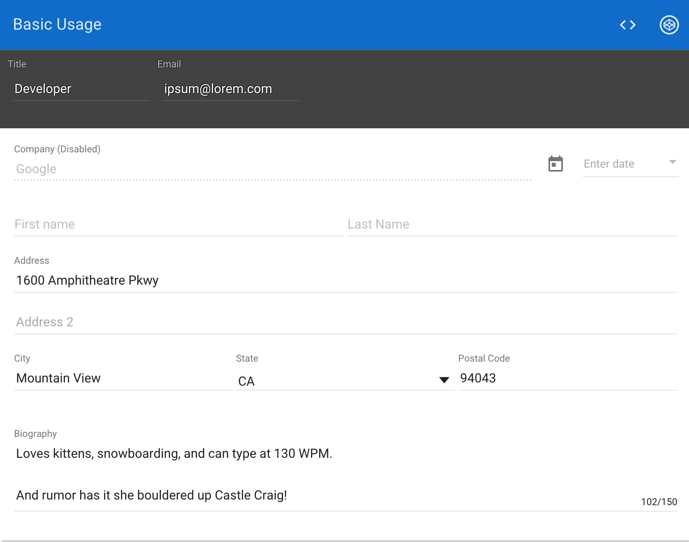
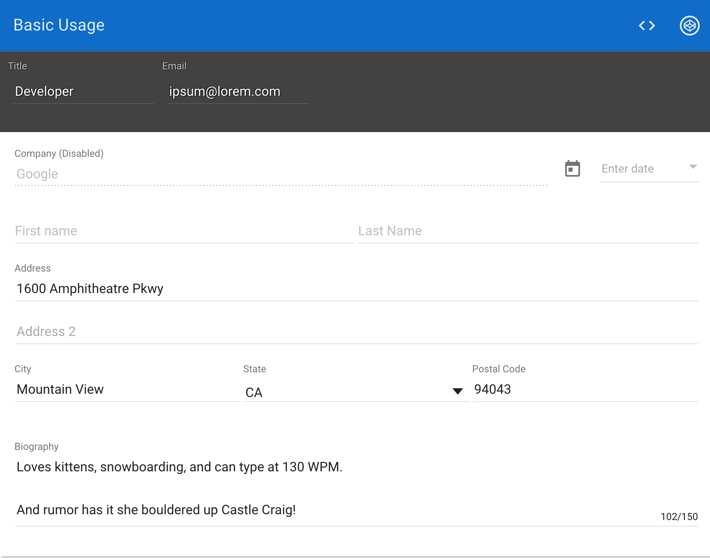

This is a presentation about Material Design in Web
During presentation we will talk about available Web libraries and frameworks that can help to build Material Design Web sides
My name is Valentyn Shybanov, I am Cloud/Web Google Developer Expert and working as Software Architect in Twinfield, Walter Kluwers
I like to make nice animated presentations with DaCSSlide library (https://github.com/olostan/dacsslide)
Please feel free to contact me if you would like to talk about Cloud and Web: olostan@gmail.com
First library is Polymer that highly utilize power of Web Components
It has "paper elements" that fully implements Material Design concept. It is most complete implementation of Material Design Web Components
However there is a great framework for real big and "serious" web applications: Angular!
And it brings Angular.Material library that is fully Angular-native (not wrapper) and also embrace mostly all Angular Material
But if you would like to use Material Design without Polymer or Angular
You can use MDL - simple library that use BEM for specifying components
Another alternative, not from Google is MUI
Really tiny library that is very quick and gives you good Material flavour
If you would like to use something more reactive
You can use 'material ui' - quite full library of Material Components
It is based on ReactJS library
But if you are old-style JS developer and still liek to use jQuery
You can use Materialize library
Here are some links where you can start diving into Material Design Word
And here how you can contact me and check sources of this presentation
Thanx!
Material Design
In Web development
 Valentyn Shybanov (olostan)
Valentyn Shybanov (olostan)


 Angular
Material

Angular
Material

 Material Design Lite
MUI
MUI has a small download size to help pages load as quickly as possible:
Material Design Lite
MUI
MUI has a small download size to help pages load as quickly as possible:
mui.min.css - 6.6KB (gzipped)
mui.min.js - 5.4KB (gzipped)
 material ui
A Set of React Components that Implement Google's Material Design
material ui
A Set of React Components that Implement Google's Material Design
 Materialize
A modern responsive front-end framework based on Material Design
Links
Polymer Paper
https://elements.polymer-project.org/browse?package=paper-elements
Angular Material
https://material.angularjs.org/latest/
MUI
https://www.muicss.com/
material ui
http://www.material-ui.com/
Materialize
http://materializecss.com/
Material Colors
http://www.materialui.co/colors
Material Palette
http://www.materialpalette.com/
Valentyn Shybanov
http://olostan.name/
My GitHub
https://github.com/olostan/
This presentation
https://github.com/olostan/slides_mdweb/
Materialize
A modern responsive front-end framework based on Material Design
Links
Polymer Paper
https://elements.polymer-project.org/browse?package=paper-elements
Angular Material
https://material.angularjs.org/latest/
MUI
https://www.muicss.com/
material ui
http://www.material-ui.com/
Materialize
http://materializecss.com/
Material Colors
http://www.materialui.co/colors
Material Palette
http://www.materialpalette.com/
Valentyn Shybanov
http://olostan.name/
My GitHub
https://github.com/olostan/
This presentation
https://github.com/olostan/slides_mdweb/